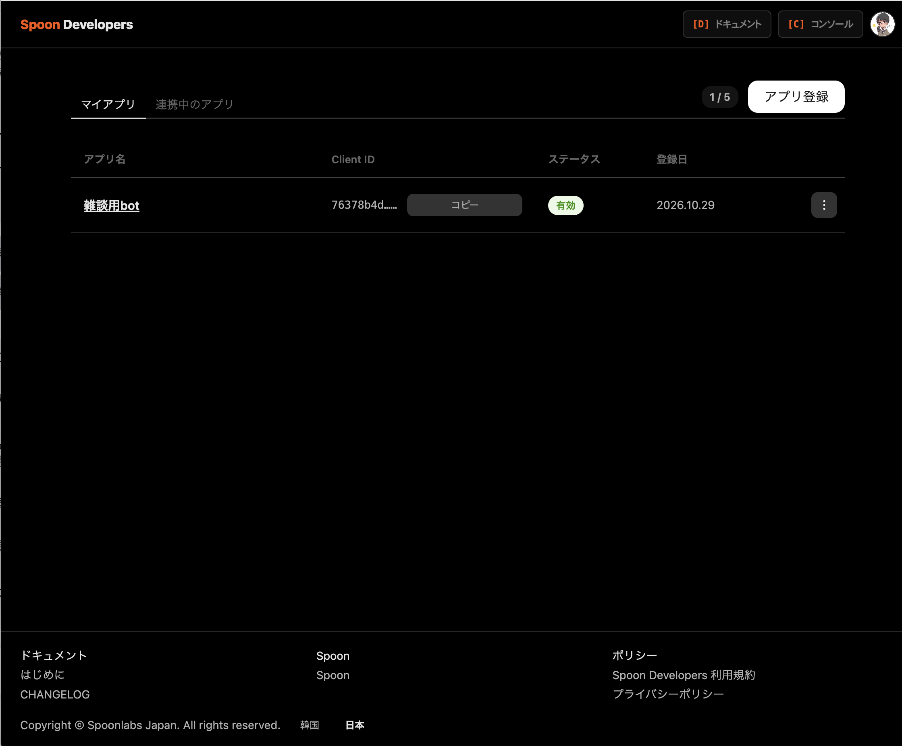
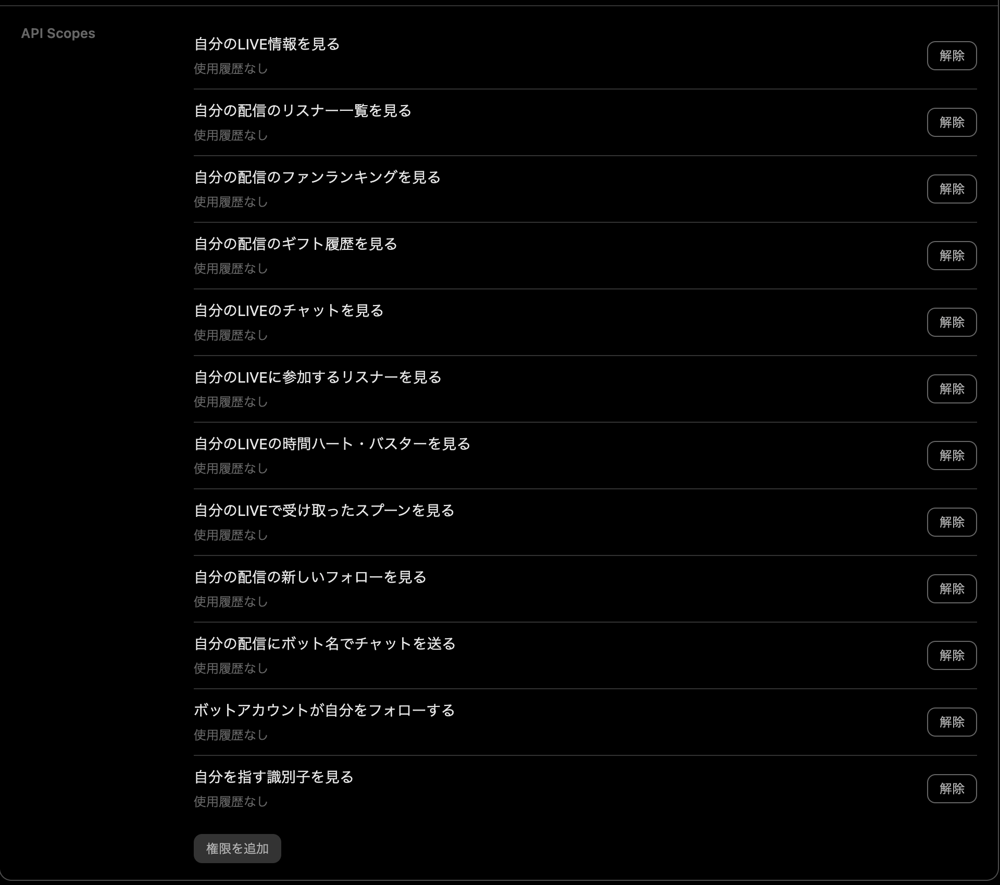
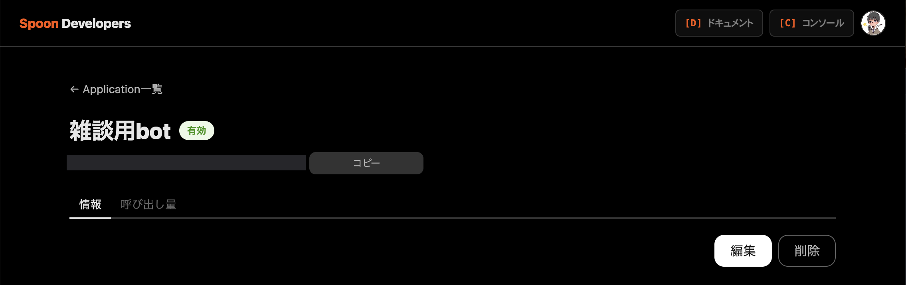

Spoon bot 導入マニュアル
Spoon の公式機能「Spoon Developers」を使って、自分の配信で動く bot（自動で反応してくれる助手）を 自分の手で作る ための手順書です。
必要なコードは全部このマニュアルに載っています。章の順にコピー＆ペーストして貼っていけば、標準機能だけの bot が完成します。
Spoon Developers のスタートページです。このページは Spoon アプリの中からは見つかりにくい 場所にあります。申請もドキュメントもここが入り口なので、作業を始める前にブラウザへブックマークしておくのがおすすめです。
このマニュアルの歩き方
- 第一部 共通編（申請まわり）
- 第1章 はじめに：自分で bot を作るということ
- 第2章 bot専用アカウントを用意する
- 第3章 Spoon Developers でアプリ登録と権限申請
- 第4章 アプリ側の設定：リダイレクトURL
- 第5章 審査承認後：Client ID と Client Secret
- 第二部 標準編（自分で作る）
- 第6章 標準編の進め方：全体像とファイル構成
- 第7章 Mac の準備：Node.js を入れる
- 第8章 Windows の準備：Node.js を入れる
- 第9章 秘密情報の置き場所：.env と env.js
- 第10章 部品1：認証（auth-server.js / auth.js）
- 第11章 部品2：接続（events.js）
- 第12章 部品3：チャット送信（chat.js）
- 第13章 部品4：キーワード反応（bot.js 前半 / config.json）
- 第14章 部品5：入室・フォローのお礼（bot.js 後半）
- 第15章 部品6：集計（stats.js）
- 第16章 部品7：管理画面（admin.js）
- 第17章 仕上げ：全部をつなぐ（index.js）
- 第18章 テスト配信（DRY_RUN）から本番へ
- 第19章 毎回の配信手順
- 第20章 ゴール：標準機能の bot の完成
- 第21章 自分の bot の直し方・広げ方
- 第三部 応用編 （本文は準備中）
- 第22章 SE（効果音）の導入と設定
- 第23章 特別な人の入室挨拶
- 第24章 公開ページと短縮リンク
- 第25章 歌枠の機能：リクエスト・セトリ・歌える曲リスト
- 第26章 お題ガチャとヒットワード反応
- 第27章 ラジオネーム＆ジングル
- 第28章 教え込み
- 第29章 ビンゴ
- 第30章 イントロドン
- 第31章 歌詞定期
- 第32章 リスナーボタン
- 第33章 歌枠モード（SEミュート）
- 第34章 バトルゲーム
- 第35章 イメージキャラ
- 付録 （本文は準備中）
- 第36章 つまずきポイント集
第1章 はじめに：自分で bot を作るということ
このマニュアルは、Spoon の公式機能「Spoon Developers」を使って、自分の配信に bot（自動で反応してくれる助手）を 自分の手で作る ための手順をまとめたものです。
「作る」と言っても、設計から全部を考えるわけではありません。必要なコードはすべてこのマニュアルに載っています。 章の順に、コードをコピーして自分のパソコンに貼っていくと、部品が1つずつ増えて、最後に bot が完成します。プログラミングの経験は不要です。
仕組みはシンプルです
- 配信はいつもどおり、配信端末（タブレット／スマホ）の Spoon アプリで開きます。
- bot は、自分の PC の上で動くプログラムです。配信中のコメント・入室・ハート・spoon・フォローを公式 API 経由で受け取り、決められた反応を返します。
- このマニュアルのゴールは、標準機能だけの bot が自分の配信で動くところです。標準機能は次の5つです。
- 起動・ログイン（認証）して、マネージャーに任命された配信に接続する
- キーワードへの自動返信（例：「!help」と打たれたら使い方を返す）
- 入室・フォローのお礼（文面のみ）
- リスナーごとの集計（コメント数・ハート・spoon を数える）
- 管理画面での設定の編集とバックアップ
- 効果音（SE）や公開ページ、ゲームなどの追加機能は、標準の先にある 応用編 で扱います。最初から全部を追う必要はありません。
図：このマニュアル全体の流れ。共通編（申請）→ 標準編（組み立て）→ テスト配信 → 本番運用
進め方は3部構成です。
- 共通編：Spoon Developers への申請と承認（どの環境でも同じ）
- 標準編：自分の PC の準備（Mac／Windows のどちらか）→ 部品ごとにコードを貼って組み立てる → テスト配信 → 本番
- 応用編：標準の bot に足したくなった機能（必要なものだけ拾って読む）
第2章 bot専用アカウントを用意する
最初に決めることが1つあります。bot になる Spoon アカウントです。
- アプリ登録したアカウントが、そのまま bot アカウントになります。bot のチャットや入室の告知は、そのアカウントの名前で出ます。
- 自分の DJ アカウントで登録してはいけません。 自分の配信に bot として接続できなくなります。
- 用意のしかたは2通り：
- 新しく Spoon アカウントを作る
- すでに持っているサブアカウントを使う（実際にこの方法で運用しています）
・bot の名前はリスナーにそのまま見えます。「誰の bot か」が分かる名前になります。静かに枠周りをしたい用途と兼ねるなら、新規アカウントの方が向いています。
アカウントのパスワードは安全な場所に保管し、チャットや SNS に書かないでください。
あわせて、アプリ名（Spoon Developers コンソールに登録する名前）も考えておくと次章がスムーズです。例：「○○雑談bot」のような、自分の配信の名前が分かるもの。
第3章 Spoon Developers でアプリ登録と権限申請
ブラウザで Spoon Developers のスタートページ（https://developers.spooncast.net/jp） を開きます。ここがすべての入り口です。「アプリケーションを登録」から登録へ、「ドキュメントを見る」から API ドキュメントへ進めます。
bot 用アカウントでログインします（DJ 本人のアカウントでログインしないこと）。
新規アプリの作成を選びます。

アプリ名と説明文を入力します。説明文のたたき台（自分の言葉に直して OK）：
リダイレクトURL は、まず http://localhost と入れておきます（あとで第4章のとおり直します）。
権限は、画面にある 12個すべて にチェックします。

12権限と、それぞれ何に使うかは次のとおりです。
| 権限 | 何に使うか |
|---|---|
| me.read | bot アカウント自身の情報を取得する |
| live.read | 配信の情報を取得する |
| listeners.read | リスナー一覧を取得する |
| fans.read | ファンの情報を取得する |
| donations.read | 投げられた spoon の記録を取得する |
| events.chat | コメントのイベントを受け取る |
| events.presence | 入室・退室のイベントを受け取る |
| events.like | ハートのイベントを受け取る |
| events.donation | spoon のイベントを受け取る |
| events.follow | フォローのイベントを受け取る |
| chat.send | チャットに返信を送る |
| dj.follow | bot が DJ をフォローするために使う |
申請を送信します。あとは審査の結果待ちです。
- 審査期間の目安は公式には公表されていません。実例では、申請した翌日に承認されました（必ずこの日数で通るという保証ではありません）。
- 差し戻された場合は理由が表示されるので、直して再審査に出せます。
承認されたら、第5章に進みます。
なお、bot が配信に接続すると bot 名でのリスナー告知が自動で出ます（これは OFF にできません）。また、イベントの接続は1配信につき1本だけです。
第4章 アプリ側の設定：リダイレクトURL
認証（初回ログイン）でつまずかないために、この章は飛ばさないでください。実際にここで失敗した経験をもとに書いています。
リダイレクトURL の正解は次の形です。
http://localhost:3000ポイントは2つです。
- ポート番号（:3000）まで含める
- 後ろにパス（/callback など）を付けない
http://localhost:3000ポート番号まで含めて、これで全部です。http://localhosthttp://localhost:3000/callbackポート無し、パス付きはどちらもダメです。図：リダイレクトURL の OK／NG 対比（マーカー部分が間違えやすいところ）
実際に起きた失敗
- 登録側が
http://localhost/（ポート・パスなし）、bot 側がhttp://localhost:3000/callbackになっていて、認証の同意画面で「このアプリとは連携できません」と表示され、先に進めませんでした。 http://localhost:3000/callbackのようにパス付きで保存しようとすると、「The redirect URI format is invalid.」と出て保存自体ができません。- 両方を
http://localhost:3000にそろえたら、その場で認証が通りました（再審査にはなりませんでした）。
http://localhost:3000 に直しておいてください。あとで bot 側の設定ファイル（.env）にも同じ値を入れます。両方が完全一致していないと認証できません。第5章 審査承認後：Client ID と Client Secret
承認されると、コンソールのアプリ詳細に Client ID と Client Secret が表示されます。

この2つは bot が API を使うための「鍵」です。扱いのルール：
・入力するのは、自分の PC の中の設定ファイルだけです（標準編の第9章で案内します）。
・Client ID も、むやみに公開しない方が安全です。
ここまでが共通編です。次は標準編に進み、自分の PC で bot を組み立てます。
第6章 標準編の進め方：作るものの全体像とファイル構成
標準編のゴールは、標準機能（第1章に挙げた5つ）が自分の配信で動くことです。ここからは、コードを部品ごとに貼って bot を組み立てていきます。
bot の仕組み
⬅返信（チャット）
⬅返信（チャット）
図：bot の仕組み。出来事は公式 API 経由で bot に届き、bot の返信はチャットで戻ります
- 配信は配信端末の Spoon アプリで開きます。bot は配信そのものには触りません。
- bot は PC の上で動くプログラムです。公式 API から配信の出来事（イベント）を受け取り、決められた反応をチャットで返します。
- bot が動くのは、自分の PC の中だけです。配信を閉じれば bot の仕事も終わります。
ファイル構成と章の対応
bot は、次のファイルでできています。章の順に1つずつ作っていくので、最初から全部を理解する必要はありません。
| ファイル | 役割 | 作る章 |
|---|---|---|
package.json | bot の名札と起動コマンドの定義 | 第9章 |
.env | 秘密情報（鍵）の置き場所 | 第9章 |
src/env.js | .env を読み込む仕組み | 第9章 |
src/auth.js | トークン（通行証）の保存・更新 | 第10章 |
src/auth-server.js | 認証用サーバー（同意 → トークン取得） | 第10章 |
src/events.js | イベント受信（配信の出来事を受け取る） | 第11章 |
src/chat.js | チャット送信（安全スイッチ付き） | 第12章 |
config.json | 文面や反応の設定 | 第13章 |
src/config.js | 設定の読み込み・保存 | 第13章 |
src/bot.js | 頭脳（反応・お礼・集計の呼び出し） | 第13〜14章 |
src/stats.js | 集計（数えてファイルに保存） | 第15章 |
src/admin.js | 管理画面 | 第16章 |
src/index.js | 起動（全部の部品をつなぐ） | 第17章 |
進め方の約束
- 各章では「貼るコード → 動かして確認 → つまずきポイント」の順で進みます。
- コードは そのままコピー＆ペースト してください。1文字でも違うと動かないことがあります。自分で書き換えるのは、文面など「変えてよい」と案内した部分だけです。
- 章の途中で「まだ動きません」と書いてある場合は、そのとおりです。部品がそろう章で初めて動きます。
まず環境準備（次のどちらか一方）
- Mac の人 → 第7章へ
- Windows の人 → 第8章へ
どちらの章も到達点は同じで、「Node.js が入り、作業フォルダができている」状態になります。そこから先（第9章以降）は OS 共通です。
第7章 Mac の準備：Node.js を入れる
対象：Mac。この章の手順は、Intel Mac（macOS Sequoia）で実際に確認したものです。
bot は Node.js という実行環境の上で動きます。まず Node.js を入れ、bot の作業フォルダを作ります。作業には「ターミナル」というアプリを使います。初めて触る前提で、開き方から説明します。
ターミナルの開き方（初めての人向け）
ターミナルは、文字で命令（コマンド）を打って Mac を操作するアプリです。このマニュアルでは、コマンドを打つ場所として何度も使います。開き方は2通りあります。どちらでも同じものが開きます。
方法1：Spotlight（検索）で開く
キーボードの ⌘（コマンド）キーとスペースキーを同時に押します。画面の真ん中あたりに検索欄が出ます。
検索欄に「ターミナル」と入力します（「terminal」でも出ます）。
「ターミナル」というアプリが候補に出たら、Enter キーを押します。
図：Spotlight の模式図。検索欄に言葉を入れると、候補にターミナルが出ます
方法2：Launchpad から開く
- Dock（画面下のアイコン列）の Launchpad を開きます。
- 「その他」というフォルダの中に「ターミナル」があります。
ターミナルの画面の見かた
開くと、白（または黒）いウィンドウが出て、文字が数行表示されます。最後の行がこんな形になっています。
（Macの名前） ~ （ユーザー名） %- 行の最後にある
%の右側が、コマンドを打ち込む場所 です。この「入力待ちの行」のことを プロンプト と呼びます。 - コマンドを打つときは、まずターミナルのウィンドウをクリックして手前に出し（これをしないと、別のアプリに文字が入ってしまいます）、プロンプトの後ろに入力します。
図：Mac ターミナルの模式図。プロンプト（赤丸）の後ろにコマンド（マーカー）を貼ります
コマンドの実行のしかた（このマニュアル共通の約束）
マニュアルに示されたコマンドを、マウスで選んでコピーします（⌘+C）。
ターミナルのウィンドウをクリックして手前に出します。
⌘+V で貼り付けます。プロンプトの後ろにコマンドが入ります。
Enter キーを押すと実行されます。
実行が終わると、結果の表示のあとに もう一度プロンプトが出ます。これが「次のコマンドを受け付けられる状態」の合図です。
- コマンドは 1行ずつ 貼って Enter、が基本です。画面の中で折り返して2行に見えても、長い1行は1行です。そのまま Enter で大丈夫です。
- 実行中（結果がまだ出ている途中）は、次のコマンドを打たないでください。プロンプトが戻ってから次へ進みます。
- 間違えて貼った場合は、Enter を押す前なら Control+C でその行を取り消せます（Control はキーボード左下のキーです）。
Node.js が入っているか確認する
ターミナルで次を実行します。
node -vv26.13.1のように表示されれば、もう入っています。最初の数字が 18 以上 なら大丈夫です。「作業フォルダを作る」へ進んでください。command not foundと出たら、まだ入っていません。次の方法で入れます。
Node.js を入れる（入っていない場合）
ブラウザで nodejs.org を開き、インストーラー（.pkg ファイル）をダウンロードします。
ダウンロードした .pkg をダブルクリックして、画面の案内どおりにインストールします。
インストールが終わったら、ターミナルで もう一度 node -v を実行し、バージョンが表示されることを確認します。
作業フォルダを作る
bot のファイルは、ダウンロードフォルダの中の bot フォルダにまとめます。ターミナルで次を1行ずつ実行します。
mkdir -p ~/Downloads/bot/srcこれは「ダウンロードフォルダの中に bot フォルダと、その中の src フォルダを作る」という命令です。何も表示されなければ成功です。
cd ~/Downloads/botcd は「今いる場所を移る」命令です。これでターミナルの居場所が bot フォルダになりました。
lsls は「今いる場所の中身を見る」命令です。src と表示されれば、フォルダ作りは完了です。
これから先の章では、ターミナルで作業するたびに、最初に cd ~/Downloads/bot を実行して bot フォルダに移ってから始めます。
・
node -v で command not found：Node.js が入っていないか、インストール直後でターミナルが認識していません。ターミナルを一度閉じて開き直してから、もう一度試してください。・プロンプトが戻ってこない：何かのプログラムが動き続けている状態です。この章の段階では起きないはずですが、Control+C で止められます。
第8章 Windows の準備：Node.js を入れる
対象：Windows。
bot は Node.js という実行環境の上で動きます（必要なのは Node 18 以上）。まず Node.js を入れ、bot の作業フォルダを作ります。作業には「PowerShell」というアプリを使います。初めて触る前提で、開き方から説明します。
PowerShell の開き方（初めての人向け）
PowerShell は、文字で命令（コマンド）を打って Windows を操作するアプリで、Windows に最初から入っています。
画面左下の スタートボタン を押すか、キーボードの Windows キーを押します。
そのままキーボードで「powershell」と入力します。検索結果に 「Windows PowerShell」 が出ます。
「Windows PowerShell」をクリックして開きます。
図：Windows のスタートメニュー検索の模式図
- Windows 11 では「ターミナル（Windows Terminal）」というアプリで PowerShell が開く場合があります。そのままで大丈夫です（このマニュアルのコマンドはどちらでも動きます）。
PowerShell の画面の見かた
開くと、青（または黒）いウィンドウが出て、最後の行がこんな形になっています。
PS C:\Users\（自分のユーザー名）>- 行の最後にある
>の右側が、コマンドを打ち込む場所 です。この「入力待ちの行」のことを プロンプト と呼びます。行頭のPSとパス（C:\Users\…）は「今いる場所」を表しています。
図：PowerShell の模式図。プロンプトの > の右側（赤丸）にコマンド（マーカー）を貼ります
コマンドの実行のしかた（このマニュアル共通の約束）
マニュアルに示されたコマンドを、マウスで選んでコピーします（Ctrl+C）。
PowerShell のウィンドウをクリックして手前に出します。
貼り付けます。方法は2通りあります。
・Ctrl+V（Windows Terminal や最近の PowerShell ではこちら）
・右クリック（従来の PowerShell の画面では、右クリックが貼り付けになります）
Enter キーを押すと実行されます。
実行が終わると、結果の表示のあとに もう一度プロンプトが出ます。これが「次のコマンドを受け付けられる状態」の合図です。
- コマンドは 1行ずつ 貼って Enter、が基本です。画面の中で折り返して2行に見えても、長い1行は1行です。
- 実行中は次のコマンドを打たないでください。プロンプトが戻ってから次へ進みます。
- 間違えて貼った場合は、Enter を押す前なら Ctrl+C でその行を取り消せます。
Node.js が入っているか確認する
PowerShell で次を実行します。
node -vv22.x.xのように表示されれば、もう入っています。最初の数字が 18 以上 なら大丈夫です。あわせてnpm -vも実行し、こちらもバージョンが表示されることを確認してください（bot の起動には npm を使います）。- 「'node' は、内部コマンドまたは外部コマンド……として認識されていません」のようなエラーが出たら、まだ入っていません。次の方法で入れます。
Node.js を入れる（入っていない場合）
ブラウザで nodejs.org を開き、LTS と書かれた Windows Installer（.msi） をダウンロードします（画面のボタンや案内はバージョンにより異なります）。
ダウンロードした .msi をダブルクリックして、画面の案内どおりにインストールします。途中の選択肢は、基本的に初期状態のまま「次へ」で進めて構いません（インストール先や「PATH への追加」は初期状態で有効になっています）。
インストール中に「このアプリがデバイスに変更を加えることを許可しますか？」と出たら「はい」を選びます。ダウンロードしたファイルの実行時に Windows の保護画面（SmartScreen）が出た場合は、「詳細情報」を開いてから「実行」を選ぶと進めます。
インストールが終わったら、開いていた PowerShell をいったん閉じて、開き直してから もう一度 node -v を実行し、バージョンが表示されることを確認します（開きっぱなしの画面では、新しく入れた Node を認識しないことがあります）。
作業フォルダを作る
bot のファイルは、ダウンロードフォルダの中の bot フォルダにまとめます。PowerShell で次を1行ずつ実行します。
mkdir $HOME\Downloads\bot
mkdir $HOME\Downloads\bot\srcこれは「ダウンロードフォルダの中に bot フォルダを、その中に src フォルダを作る」という命令です。作ったフォルダの情報が表示されれば成功です（$HOME は自分のユーザーフォルダを表す書き方です）。
cd $HOME\Downloads\botcd は「今いる場所を移る」命令です。プロンプトの表示が PS C:\Users\（自分のユーザー名）\Downloads\bot> に変わります。
dirdir は「今いる場所の中身を見る」命令です。src というフォルダが見えれば、フォルダ作りは完了です。
これから先の章では、PowerShell で作業するたびに、最初に cd $HOME\Downloads\bot を実行して bot フォルダに移ってから始めます。エクスプローラーで bot フォルダを開いて アドレスバーに powershell と入力して Enter すると、そのフォルダを場所として PowerShell が開くので、慣れてきたらこちらも便利です。
・
npm のコマンドだけ止まる：PowerShell の設定（実行ポリシー）によっては、後の章で使う npm run … が「npm.ps1 を読み込めません。スクリプトの実行が無効になっています」というエラーで止まることがあります。対処は第10章のコラムにまとめてあります（コマンドプロンプトに切り替える方法と、実行ポリシーを変える方法）。この章の node -v は影響を受けません。・プロンプトが戻ってこない：何かのプログラムが動き続けている状態です。Ctrl+C で止められます。
第9章 秘密情報の置き場所：.env と env.js
ここから組み立てに入ります。最初に作るのは、鍵（Client ID と Client Secret）を入れる場所と、それを読む仕組みです。
この章で作るもの：
.env.example（鍵入れの見本ファイル）→ コピーして.env（実際に使う鍵入れ）src/env.js（.env を読む仕組み）package.json（bot の名札と起動コマンドの定義）
ファイルの作り方（初めての人向け）
コードのファイルは、テキストエディタで作ります。OS ごとに、失敗しにくい作り方をまとめます。
Mac（テキストエディット）の場合
テキストエディットを開き、新規書類を作ります。
メニューの「フォーマット」→ 「標準テキストにする」 を選びます。（これをしないと、文字が装飾付きの形式で保存されてしまい、コードとして読めません。）
マニュアルのコードを貼り付けます。
「ファイル」→「保存」で、保存先フォルダとファイル名を指定して保存します。
- 名前の最後が指定どおりの拡張子（
.jsや.json）になっているか確認してください。「.txt を追加」というチェックが出たら外します。拡張子が違うという警告が出たら「.js を使用」（指定した拡張子を使う方）を選びます。 - コードの中の引用符（
"や'）が、丸まった形（“ ”）に化けていないかも見てください。化ける場合は、テキストエディットの環境設定で「スマート引用符」をオフにしてから貼り直します。
Windows（メモ帳）の場合
メモ帳を開き、マニュアルのコードを貼り付けます。
「ファイル」→「名前を付けて保存」で、保存先フォルダを選びます。
ファイル名は指定どおりに（例：env.js）、ファイルの種類は「すべてのファイル」 にしてから保存します。（種類が「テキスト文書」のままだと、env.js.txt のような名前で保存されてしまいます。）
文字コードの選択肢が出る場合は 「UTF-8」 を選びます。
事故に気づけるよう、エクスプローラーの「表示」設定で 「ファイル名拡張子」にチェック を入れておくことをおすすめします。拡張子が見えれば、env.js.txt になっているかどうか目で確認できます。
.env.example を作る
次の内容を、そのまま .env.example という名前で、bot フォルダ（Downloads/bot）の直下に保存します。
# このファイルをコピーして「.env」という名前で保存し、審査承認後に値を入れます。
# 注意: Client Secret は絶対にチャットやSNSに貼らないでください。このファイル自体も公開しないこと。
# 日本リージョンのAPIアドレス（固定でOK）
SPOON_BASE_URL=https://jp-openapi.spooncast.net
# 審査承認後に Developer Center に表示される値（今は空でOK）
SPOON_CLIENT_ID=
SPOON_CLIENT_SECRET=
# アプリ登録時に入れたリダイレクトURLと完全一致させること（ポート番号まで）
SPOON_REDIRECT_URI=http://localhost:3000
# 安全スイッチ: 1 の間は実際にチャットを送らず、画面に表示するだけです。
# 本番で送り始めるときにだけ 0 に変えます。最初は必ず 1 のまま。
DRY_RUN=1.env を作って鍵を入れる
ターミナル（Mac）／PowerShell（Windows）で bot フォルダに移り、見本をコピーして .env を作ります。
cd ~/Downloads/bot
cp .env.example .envcd $HOME\Downloads\bot
copy .env.example .env.env をエディタで開きます。
open -e ~/Downloads/bot/.envnotepad .env次の2行の = の後ろに、第5章で確認した 自分の値 を入れます（ここでは伏せ字で示します）。
SPOON_CLIENT_ID=****
SPOON_CLIENT_SECRET=****- 値を「"」（引用符）で囲む必要はありません。そのまま貼り付けます。行の途中や末尾に余分な空白を入れないでください。
SPOON_REDIRECT_URIは第4章の値（アプリ側に登録したもの）と完全一致させます。DRY_RUN=1は安全スイッチです。1 の間は bot は実際にチャットを送らず、画面に表示するだけになります。最初は必ず 1 のままにしてください。本番で送り始めるときだけ 0 に変えます。- 保存してエディタを閉じます。
設定できたかは、中身を表示せずに確かめられます。次のコマンドは、値が入っている行の「件数」だけを表示します。
grep -c "SPOON_CLIENT_ID=" ~/Downloads/bot/.env
grep -c "SPOON_CLIENT_SECRET=" ~/Downloads/bot/.env(Select-String -Path .env -Pattern "SPOON_CLIENT_ID=").Count
(Select-String -Path .env -Pattern "SPOON_CLIENT_SECRET=").Count両方とも 1 と出れば、項目自体は書けています（値の中身は画面に出ません）。
src/env.js を作る
次に、.env を読み込む仕組みを作ります。次のコードを、そのまま env.js という名前で src フォルダの中 に保存します。
// .env ファイルを読み込む小さな仕組み（外部ライブラリなし）
// すでに環境変数として設定されている値は上書きしません。
import { existsSync, readFileSync } from 'node:fs';
import { dirname, join } from 'node:path';
import { fileURLToPath } from 'node:url';
const projectRoot = join(dirname(fileURLToPath(import.meta.url)), '..');
export function loadEnv() {
const envPath = join(projectRoot, '.env');
if (!existsSync(envPath)) return;
const text = readFileSync(envPath, 'utf8');
for (const line of text.split(/\r?\n/)) {
const trimmed = line.trim();
if (!trimmed || trimmed.startsWith('#')) continue;
const eq = trimmed.indexOf('=');
if (eq === -1) continue;
const key = trimmed.slice(0, eq).trim();
const value = trimmed.slice(eq + 1).trim();
if (key && process.env[key] === undefined) {
process.env[key] = value;
}
}
}
export function getEnv(name, fallback = '') {
const value = process.env[name];
return value === undefined || value === '' ? fallback : value;
}
// 安全スイッチ: DRY_RUN が "0" のときだけ本番送信。それ以外（未設定含む）は安全側。
export function isDryRun() {
return process.env.DRY_RUN !== '0';
}
export { projectRoot };このファイルの役割は3つです。
loadEnv()：.envの中身を読んで、プログラムから使えるようにするgetEnv(名前)：鍵などの値を取り出すisDryRun()：安全スイッチ（DRY_RUN）の状態を答える。0のときだけ本番送信で、それ以外は安全側（送らない）に倒れる作りです
package.json を作る
最後に、bot の名札を作ります。次の内容を package.json という名前で、bot フォルダの直下に保存します。（見やすく改行してありますが、内容は完成形そのものです。）
{
"description": "マニュアル掲載用の最小サンプルbot（Spoon Developers・標準機能だけを実装）",
"engines": {
"node": ">=18"
},
"name": "spoon-minimal-bot",
"scripts": {
"auth": "node src/auth-server.js",
"mock": "node test/mock.js",
"start": "node src/index.js"
},
"type": "module",
"version": "0.1.0"
}scriptsのauthが「認証を実行するコマンド」、startが「bot を起動するコマンド」の定義です。第10章以降でnpm run auth、npm startと打つのは、この定義を呼び出しています。mockは検証用のコマンドです。このマニュアルでは使いません（載せてあるのは完成形に合わせるためです）。"type": "module"は、コードの書き方（import を使う方式）の指定です。以後のコードは全部この方式で書かれています。
図：ここまでのフォルダ構成（マーカーが、この章で作ったもの）
.txt が付いている（例：env.js.txt）：エディタの保存の仕方が原因です。Mac は「.txt を追加」を外す、Windows はファイルの種類を「すべてのファイル」にして、名前を付け直してください。・
.env が見つからない：.env は先頭がドットのファイルで、通常の表示では見えないことがあります（Mac の Finder では ⌘+Shift+. で表示されます）。ターミナル／PowerShell で ls／dir を実行すると、隠れていても名前が確認できます。・鍵の値に空白が混ざっている：貼り付けのときに前後の空白や改行が入ると、認証で失敗します。値の前後はきれいにそろえてください。
第10章 部品1：認証（auth-server.js / auth.js）
部品の1つ目は「認証」です。bot が Spoon の API を使うための通行証（トークン）を、最初に1回だけ取得します。
仕組みはこうです。
図：認証の流れ。code の有効期限は60秒と短いので、受け取ったらすぐ交換します
- ブラウザで同意画面を開き、DJ 本人のアカウント で同意します。
- 同意すると、自分の PC で動いている認証用サーバーに「code」という短い合言葉が戻ってきます。
- サーバーは code をトークンに交換し、
tokens.jsonというファイルに保存します。以後はこのトークンで API を使います。
作るファイルは2つです。
src/auth.js を作る
次のコードを、そのまま auth.js という名前で src フォルダの中に保存します。
// 認証（OAuth）まわり。
// - トークンは tokens.json に保存します（このファイルは秘密情報です。共有禁止）
// - Client Secret やトークンの値は、絶対に画面に表示しません
import { existsSync, readFileSync, writeFileSync } from 'node:fs';
import { join } from 'node:path';
import { getEnv, projectRoot } from './env.js';
const tokensPath = join(projectRoot, 'tokens.json');
export function loadTokens() {
if (!existsSync(tokensPath)) return null;
try {
return JSON.parse(readFileSync(tokensPath, 'utf8'));
} catch {
console.error('tokens.json が壊れているようです。削除して認証をやり直してください。');
return null;
}
}
export function hasTokens() {
const t = loadTokens();
return Boolean(t?.access_token && t?.refresh_token);
}
export function saveTokens(tokenResponse) {
const now = Date.now();
const expiresInSec = Number(tokenResponse.expires_in ?? 3600);
const tokens = {
access_token: tokenResponse.access_token,
refresh_token: tokenResponse.refresh_token,
// 有効期限の少し前（60秒前）には更新するように、期限時刻を記録します
expires_at: now + expiresInSec * 1000,
scope: tokenResponse.scope ?? '',
saved_at: new Date(now).toISOString(),
};
writeFileSync(tokensPath, JSON.stringify(tokens, null, 2), { mode: 0o600 });
console.log('トークンを tokens.json に保存しました（内容は表示しません）。');
return tokens;
}
function basicAuthHeader() {
const id = getEnv('SPOON_CLIENT_ID');
const secret = getEnv('SPOON_CLIENT_SECRET');
if (!id || !secret) {
throw new Error('.env に SPOON_CLIENT_ID と SPOON_CLIENT_SECRET を入れてください（承認後に表示されます）。');
}
return 'Basic ' + Buffer.from(`${id}:${secret}`).toString('base64');
}
async function requestToken(formFields) {
const base = getEnv('SPOON_BASE_URL', 'https://jp-openapi.spooncast.net');
const res = await fetch(`${base}/v1/oauth/token`, {
method: 'POST',
headers: {
Authorization: basicAuthHeader(),
'Content-Type': 'application/x-www-form-urlencoded',
},
body: new URLSearchParams(formFields).toString(),
});
if (!res.ok) {
// エラー内容に秘密情報は含まれない想定ですが、本文はそのまま出さず状態だけ伝えます
throw new Error(`トークン取得に失敗しました（HTTP ${res.status}）。時間をおいて認証をやり直してください。`);
}
return res.json();
}
// 同意画面から戻ってきた code（有効期限60秒）をトークンに交換します。
export async function exchangeCode(code) {
const data = await requestToken({
grant_type: 'authorization_code',
code,
redirect_uri: getEnv('SPOON_REDIRECT_URI', 'http://localhost:3000'),
});
return saveTokens(data);
}
// リフレッシュトークンで新しいトークンの組をもらいます。
// 注意: 更新すると古いリフレッシュトークンは即座に無効になるため、必ず新しい組を保存します。
export async function refreshTokens() {
const current = loadTokens();
if (!current?.refresh_token) {
throw new Error('tokens.json にリフレッシュトークンがありません。先に認証（npm run auth）を実行してください。');
}
const data = await requestToken({
grant_type: 'refresh_token',
refresh_token: current.refresh_token,
});
return saveTokens(data);
}
// 有効なアクセストークンを返します。期限が近ければ自動で更新します。
export async function getValidAccessToken() {
let tokens = loadTokens();
if (!tokens?.access_token) {
throw new Error('tokens.json がありません。先に認証（npm run auth）を実行してください。');
}
const safetyMarginMs = 60 * 1000;
if (!tokens.expires_at || Date.now() > tokens.expires_at - safetyMarginMs) {
console.log('アクセストークンの期限が近いので更新します…');
tokens = await refreshTokens();
}
return tokens.access_token;
}役割の要点だけ押さえてください。
- トークンは
tokens.jsonに保存されます。このファイルは認証の鍵そのもの なので、.env と同じく公開・共有は厳禁です。 - トークンには有効期限があります。期限が近づくと
getValidAccessToken()が自動で新しい組に更新します。更新すると古い組は即座に無効になる ため、コードは必ず新しい組を保存する作りになっています（ここを書き換えないでください）。
src/auth-server.js を作る
次のコードを、そのまま auth-server.js という名前で src フォルダの中に保存します。
// 認証用の小さなローカルサーバー。
// 役割: 同意画面のURLを表示する → 同意後に戻ってきた code を受け取る → トークンに交換して保存する。
// このサーバーは自分のパソコンの中（localhost）でだけ動きます。外からはアクセスできません。
import { createServer } from 'node:http';
import { randomBytes } from 'node:crypto';
import { loadEnv, getEnv } from './env.js';
import { exchangeCode } from './auth.js';
loadEnv();
const redirectUri = getEnv('SPOON_REDIRECT_URI', 'http://localhost:3000');
const redirectUrl = new URL(redirectUri);
const port = Number(redirectUrl.port || 3000);
const callbackPath = redirectUrl.pathname || '/callback';
const clientId = getEnv('SPOON_CLIENT_ID');
// ============================================================
// 同意画面（authorize）のURL形式は公式ガイド「Build a bot」で確認済み:
// https://developers.spooncast.net/jp/oauth/authorize
// ?response_type=code&client_id=...&redirect_uri=...&scope=...&state=...
// リージョンは /jp（日本）。APIのベースURL（jp-openapi...）とは別なので注意。
// scope はアプリ登録時に申請した権限と一致させること。登録内容と違う場合は、
// この scope の文字列を登録した権限に合わせて直してください。
// ============================================================
const consentState = randomBytes(16).toString('hex');
function buildConsentUrl() {
const scope = 'me.read live.read listeners.read fans.read donations.read events.chat events.presence events.like events.donation events.follow chat.send dj.follow';
const params = new URLSearchParams({
response_type: 'code',
client_id: clientId,
redirect_uri: redirectUri,
scope,
state: consentState,
});
return `https://developers.spooncast.net/jp/oauth/authorize?${params.toString()}`;
}
if (!clientId || !getEnv('SPOON_CLIENT_SECRET')) {
console.log(
'.env に SPOON_CLIENT_ID と SPOON_CLIENT_SECRET が入っていません。\n' +
'審査承認後に表示される値を、安全な方法で .env に入れてから、もう一度実行してください。',
);
process.exit(0);
}
const server = createServer(async (req, res) => {
const url = new URL(req.url, redirectUri);
if (url.pathname !== callbackPath) {
res.writeHead(404, { 'Content-Type': 'text/plain; charset=utf-8' });
res.end('ここではありません。同意後に自動で戻ってくるページです。');
return;
}
const code = url.searchParams.get('code');
const error = url.searchParams.get('error');
const returnedState = url.searchParams.get('state');
if (returnedState && returnedState !== consentState) {
res.writeHead(400, { 'Content-Type': 'text/plain; charset=utf-8' });
res.end('安全確認（state）が一致しませんでした。最初からやり直してください。');
console.error('state が一致しなかったため、認証を中止しました。');
return;
}
if (error || !code) {
res.writeHead(400, { 'Content-Type': 'text/plain; charset=utf-8' });
res.end('同意が完了しなかったようです。画面の案内を確認して、もう一度お試しください。');
console.error('同意が完了しませんでした（code が返ってきませんでした）。');
return;
}
try {
// code の有効期限は60秒と短いので、受け取ったらすぐ交換します
await exchangeCode(code);
res.writeHead(200, { 'Content-Type': 'text/plain; charset=utf-8' });
res.end('認証が完了しました。このページは閉じて大丈夫です。元の画面に戻ってください。');
console.log('認証が完了しました。トークンを保存しました。このサーバーは Ctrl+C で止めて大丈夫です。');
} catch (err) {
res.writeHead(500, { 'Content-Type': 'text/plain; charset=utf-8' });
res.end('トークンの取得に失敗しました。元の画面の表示を確認してください。');
console.error(`トークン取得に失敗しました: ${err.message}（code は60秒で切れるため、最初からやり直すのが確実です）`);
}
});
server.listen(port, '127.0.0.1', () => {
console.log(`認証用サーバーを起動しました: http://localhost:${port}`);
console.log('');
console.log('次の順番で進めてください:');
console.log(' 1. 下のURLをブラウザで開く');
console.log(' 2. 配信する DJ 本人のアカウントで同意する ※bot用アカウントではなく、配信者本人の同意です');
console.log(' 3. 自動でこのサーバーに戻ってくれば完了です');
console.log('');
console.log(buildConsentUrl());
});- コードの中ほどにある
scopeの文字列は、第3章で申請した12権限と一致させてあります。申請した権限がこれと違う場合は、その文字列を自分の申請内容に合わせて直してください。 - このサーバーは自分の PC の中（localhost）でだけ動きます。外からはアクセスできません。
動かして確認：認証を実行する
ターミナル（Mac）／PowerShell（Windows）で bot フォルダに移り、認証を実行します。
cd ~/Downloads/bot
npm run authcd $HOME\Downloads\bot
npm run auth画面に「認証用サーバーを起動しました」と、進め方と長い URL が表示されます。
- もし「.env に SPOON_CLIENT_ID と SPOON_CLIENT_SECRET が入っていません」と出たら、第9章に戻って .env の記入を確認してください。
表示された URL をブラウザで開きます。
ここが大事な分かれ道です。 同意は DJ 本人のアカウント で行います。
- 画面に表示されているアカウント名を確認してください。bot 用アカウントの名前になっていたら、いったんログアウトして DJ 本人のアカウントでログインし直します。
- bot 用アカウントのまま同意すると「このアプリとは連携できません」と表示されて進めません（実際にこの切り分けで解決しました）。
同意すると、ブラウザが自動で認証用サーバーに戻り、「認証が完了しました」と表示されます。ターミナル／PowerShell 側にも「トークンを tokens.json に保存しました」と出ます。
bot フォルダに tokens.json ができていれば認証は完了です。認証用サーバーは Ctrl+C で止めて構いません。
npm run auth からやり直してください（何度やり直しても問題ありません）。npm run auth の時点で「npm.ps1 を読み込めません。スクリプトの実行が無効になっています」のようなエラーが出て、コマンド自体が動かないことがあります。その場合は次のどちらかで進めます。・簡単な方法：コマンドプロンプトを使う。スタートメニューで「cmd」と検索して開き、
cd %USERPROFILE%\Downloads\bot で bot フォルダに移動してから、同じ npm run auth などを実行します。このマニュアルのコマンドは、ほとんどがコマンドプロンプトでもそのまま使えます（copy や cd、npm 系は共通です）。・PowerShell のまま使う方法：
Set-ExecutionPolicy -Scope CurrentUser RemoteSigned を実行して「Y」で確定すると、自分のユーザー範囲だけスクリプト実行が許可されます（管理者権限は不要です）。元に戻す必要は基本的にありません。なお、これは npm コマンドが止まる場合だけの対処です。bot 本体の動作には関係ありません。
http://localhost:3000 で一致しているか）を確認してください。失敗のほとんどはこの2つです。・ブラウザが戻ってこない／エラーになる：code の60秒切れの可能性があります。
npm run auth からやり直してください。・tokens.json は絶対に人に渡さない：認証の鍵そのものです。.env と同じ扱いをしてください。
第11章 部品2：接続（events.js）
部品の2つ目は「接続」です。配信中の出来事（イベント）を、リアルタイムで受け取る仕組みを作ります。
イベントの種類は次の5つ＋終了通知です。
| イベント | 届くタイミング |
|---|---|
chat | コメントが投稿されたとき |
presence | 入室・退室があったとき |
like | ハートが押されたとき |
donation | spoon が投げられたとき |
follow | フォローされたとき |
end | 接続が終わるとき（理由つき） |
図：イベントの流れ。配信で起きた出来事が、公式 API を通って bot に次々届きます
src/events.js を作る
次のコードを、そのまま events.js という名前で src フォルダの中に保存します。
// イベント受信（SSE: Server-Sent Events）の仕組み。
// 配信中のチャット・入室・ハート・spoon・フォローをリアルタイムで受け取ります。
import { getEnv } from './env.js';
import { getValidAccessToken, refreshTokens } from './auth.js';
const sleep = (ms) => new Promise((resolve) => setTimeout(resolve, ms));
// SSEのテキストを少しずつ受け取り、イベント単位に切り分けるパーサー。
// - 空行がイベントの区切り
// - 「:」で始まる行はハートビート（接続維持用）なので無視
// - event: が種類、data: が中身（JSON）
export function createSSEParser(onEvent) {
let buffer = '';
function handleFrame(frame) {
let eventName = 'message';
const dataLines = [];
for (const rawLine of frame.split('\n')) {
const line = rawLine.replace(/\r$/, '');
if (line === '' || line.startsWith(':')) continue; // ハートビート等
if (line.startsWith('event:')) eventName = line.slice(6).trim();
else if (line.startsWith('data:')) dataLines.push(line.slice(5).trim());
}
if (dataLines.length === 0) return;
let data = null;
try {
data = JSON.parse(dataLines.join('\n'));
} catch {
return; // JSONでないデータは読み飛ばす
}
onEvent(eventName, data);
}
return {
push(chunkText) {
buffer += chunkText;
// フレームの区切りは空行（\n\n）。環境差を吸収するため \r\n\r\n も扱う
buffer = buffer.replace(/\r\n/g, '\n');
let idx;
while ((idx = buffer.indexOf('\n\n')) !== -1) {
const frame = buffer.slice(0, idx);
buffer = buffer.slice(idx + 2);
if (frame.trim()) handleFrame(frame);
}
},
flush() {
if (buffer.trim()) handleFrame(buffer);
buffer = '';
},
};
}
// イベントに接続し続けます。
// handlers: { chat(data), presence(data), like(data), donation(data), follow(data), end(data) }
// 戻り値: 停止するための関数を持つオブジェクト
export async function connectEvents(handlers, options = {}) {
const base = getEnv('SPOON_BASE_URL', 'https://jp-openapi.spooncast.net');
const getToken = options.getAccessToken ?? getValidAccessToken;
const doRefresh = options.refreshTokens ?? refreshTokens;
const fetchImpl = options.fetchImpl ?? fetch;
const sleepImpl = options.sleep ?? sleep;
let stopped = false;
let backoffMs = 5_000;
const maxBackoffMs = 60_000;
const stop = () => {
stopped = true;
};
(async () => {
while (!stopped) {
let endReason = null;
try {
const accessToken = await getToken();
const res = await fetchImpl(`${base}/v1/live/events`, {
headers: {
Authorization: `Bearer ${accessToken}`,
Accept: 'text/event-stream',
},
});
if (res.status === 404) {
// 配信していないだけ（エラーではない）。待ってから接続し直す
options.onStatus?.('待機中（配信していません）');
console.log(`配信中ではありません。${Math.round(backoffMs / 1000)}秒後に再接続します…`);
await sleepImpl(backoffMs);
backoffMs = Math.min(backoffMs * 2, maxBackoffMs);
continue;
}
if (!res.ok || !res.body) {
console.error(`イベント接続に失敗しました（HTTP ${res.status}）。${Math.round(backoffMs / 1000)}秒後に再接続します…`);
await sleepImpl(backoffMs);
backoffMs = Math.min(backoffMs * 2, maxBackoffMs);
continue;
}
console.log('イベントに接続しました。配信の様子を見守ります。');
options.onStatus?.('接続中');
backoffMs = 5_000;
const parser = createSSEParser((eventName, data) => {
if (eventName === 'end') {
endReason = data?.reason ?? null;
handlers.end?.(data);
return;
}
handlers[eventName]?.(data);
});
const reader = res.body.getReader();
const decoder = new TextDecoder();
while (!stopped) {
const { value, done } = await reader.read();
if (done) break;
parser.push(decoder.decode(value, { stream: true }));
if (endReason) break;
}
parser.flush();
} catch (err) {
if (!stopped) {
console.error(`イベント受信で問題が起きました: ${err.message}。${Math.round(backoffMs / 1000)}秒後に再接続します…`);
await sleepImpl(backoffMs);
backoffMs = Math.min(backoffMs * 2, maxBackoffMs);
continue;
}
}
// end イベントの理由ごとの扱い
if (endReason === 'DUPLICATE_CONNECTION') {
// すでに別の接続が生きている。再接続すると互いに切断し合うので、ここで完全停止
console.error('別の接続がすでにあります（DUPLICATE_CONNECTION）。二重起動していないか確認してください。このbotは停止します。');
stopped = true;
break;
}
if (stopped) break;
if (endReason === 'TOKEN_EXPIRED') {
console.log('トークンの期限切れで接続が終わりました。更新して再接続します…');
try {
await doRefresh();
} catch (err) {
console.error(`トークン更新に失敗しました: ${err.message}`);
await sleepImpl(backoffMs);
}
continue;
}
if (endReason === 'LIVE_ENDED') {
options.onStatus?.('待機中（配信は終了しました）');
console.log('配信が終了しました。次の配信に備えて待機します…');
await sleepImpl(backoffMs);
continue;
}
// RECONNECT は公式推奨どおり、待ち時間なしで即再接続（配信もトークンも正常なため）
if (endReason === 'RECONNECT') {
console.log('サーバー側の都合で接続が切り替わりました。すぐに再接続します…');
continue;
}
// その他の理由は少し待って再接続
if (endReason) {
console.log(`接続が終了しました（理由: ${endReason}）。再接続します…`);
await sleepImpl(3_000);
}
}
console.log('イベント受信を停止しました。');
})();
return { stop };
}このファイルの肝は2つです。
- 受け取りの形式（SSE）：イベントは少しずつ流れてくるので、区切りごとに切り分けて「種類」と「中身」に分ける処理（パーサー）が入っています。
- 切れても立て直す：接続が切れたら、理由に応じて「待ってからつなぎ直す」「トークンを更新してつなぎ直す」などを自動で行います。特に 404 はエラーではなく「今は配信していない」という意味 です。待機して再接続を繰り返します。
動かして確認：イベントが見えるか
部品だけでは起動できないので、ここからは 確認専用の使い捨てファイル check.js を使います。これは bot の部品ではなく、部品の動きを見るためだけのファイルです。第17章で全部をつないだら消します。
次の内容を check.js という名前で、bot フォルダの直下（src の中ではありません）に保存します。
// 確認専用の使い捨てファイルです（bot の部品ではありません。第17章で消します）
import { loadEnv } from './src/env.js';
import { connectEvents } from './src/events.js';
loadEnv();
await connectEvents({
chat: (data) => console.log('チャット:', data?.user?.nickname, data?.message),
presence: (data) => console.log('入室・退室:', data?.type, data?.user?.nickname),
like: (data) => console.log('ハート:', data?.user?.nickname, data?.amount),
donation: (data) => console.log('spoon:', data?.user?.nickname, data?.amount),
follow: (data) => console.log('フォロー:', data?.user?.nickname),
end: (data) => console.log('終了通知:', data?.reason),
});
console.log('確認用に接続しました。止めるときは Ctrl+C です。');確認の手順：
配信端末で、ファン限定のテスト配信 を開きます（この時点では bot はまだ何も返しません。出来事を受け取るだけです）。
ターミナル（Mac）／PowerShell（Windows）で bot フォルダに移り、check.js を実行します。
cd ~/Downloads/bot
node check.jscd $HOME\Downloads\bot
node check.js「イベントに接続しました」と表示されたら接続成功です。その状態で、配信にコメントを打ったり、入室したりしてみてください。画面に「チャット:（名前）（内容）」のように、出来事が1行ずつ表示されれば、部品2は動いています。
確認が終わったら Ctrl+C で止めます。
・ずっと「配信中ではありません」：配信が開かれていないか、認証した DJ 本人の配信ではない可能性があります。テスト配信が開いているか確認してください。
第12章 部品3：チャット送信（chat.js）
部品の3つ目は「チャット送信」です。bot が配信のチャット欄に文を送る仕組みを作ります。
src/chat.js を作る
次のコードを、そのまま chat.js という名前で src フォルダの中に保存します。
// 配信にチャットを送る仕組み。
// DRY_RUN が有効な間は、実際には送らず画面に表示するだけ（安全スイッチ）。
import { getEnv, isDryRun } from './env.js';
import { getValidAccessToken } from './auth.js';
export async function sendChat(message) {
const text = String(message ?? '').trim();
if (!text) return false;
// 公式仕様：message は最大200文字（UTF-16コード単位＝JSのlengthと同じ数え方）。
// 超える文はエラーになるので、送らずに知らせる。
if (text.length > 200) {
console.error(`チャット送信を止めました（${text.length}文字で、公式上限200文字を超えています）: ${text.slice(0, 50)}…`);
return false;
}
if (isDryRun()) {
console.log(`[DRY_RUN] 送信しません（本番ではこの文を送ります）: ${text}`);
return true;
}
const base = getEnv('SPOON_BASE_URL', 'https://jp-openapi.spooncast.net');
const accessToken = await getValidAccessToken();
const res = await fetch(`${base}/v1/live/chat`, {
method: 'POST',
headers: {
Authorization: `Bearer ${accessToken}`,
'Content-Type': 'application/json',
},
// 公式仕様で確認済み：送信フィールドは message（最大200文字）
body: JSON.stringify({ message: text }),
});
if (res.status !== 204 && !res.ok) {
console.error(`チャット送信に失敗しました（HTTP ${res.status}）。`);
return false;
}
console.log(`チャットを送信しました: ${text}`);
return true;
}大事な点は2つです。
- 200文字の上限：チャットの文は公式仕様で最大200文字です。超える文は送らずに知らせる作りになっています（返信文を作るときの目安にしてください）。
- 安全スイッチ（DRY_RUN）：.env の
DRY_RUNが1の間は、実際には送らず「[DRY_RUN] 送信しません（本番ではこの文を送ります）: …」と画面に表示するだけです。組み立ての間はこの状態で確認するので、誤って本物の配信に bot の文が流れることはありません。
動かして確認：送信の形が見えるか
check.js を、次の内容に 丸ごと差し替えて 保存します（接続の確認に、送信の確認を1つ足したものです）。
🧪 check.js（確認専用・差し替え）// 確認専用の使い捨てファイルです（bot の部品ではありません。第17章で消します）
import { loadEnv } from './src/env.js';
import { connectEvents } from './src/events.js';
import { sendChat } from './src/chat.js';
loadEnv();
await connectEvents({
chat: (data) => console.log('チャット:', data?.user?.nickname, data?.message),
presence: (data) => console.log('入室・退室:', data?.type, data?.user?.nickname),
like: (data) => console.log('ハート:', data?.user?.nickname, data?.amount),
donation: (data) => console.log('spoon:', data?.user?.nickname, data?.amount),
follow: (data) => console.log('フォロー:', data?.user?.nickname),
end: (data) => console.log('終了通知:', data?.reason),
});
await sendChat('bot の送信テストです');
console.log('確認用に接続しました。止めるときは Ctrl+C です。');テスト配信を開いた状態で、もう一度 node check.js を実行します（第11章と同じコマンドです）。
画面に [DRY_RUN] 送信しません（本番ではこの文を送ります）: bot の送信テストです と出れば成功です。実際のチャット欄には何も出ていないことも確認してください（それが安全スイッチの働きです）。
確認が終わったら Ctrl+C で止めます。
cd で bot フォルダにいることと、ファイル名が check.js で合っていることを確認してください。・いきなり本物のチャットに送ってしまった：.env の
DRY_RUN が 0 になっている可能性があります。第9章の設定を確認してください。組み立ての間は必ず 1 です。第13章 部品4：キーワード反応（bot.js 前半 / config.json）
部品の4つ目は「キーワード反応」です。チャットに決められた言葉が打たれたら、決められた文を返す——bot の「頭脳」の前半を作ります。あわせて、文面などの設定ファイルも用意します。
src/config.js を作る
次のコードを、そのまま config.js という名前で src フォルダの中に保存します。
// 設定ファイルの読み込みと保存。
// config.json があればそれを、無ければ config.example.json（見本）を使います。
// 保存はいつも config.json へ書きます（見本ファイルは上書きしません）。
import { existsSync, readFileSync, writeFileSync } from 'node:fs';
import { join } from 'node:path';
import { projectRoot } from './env.js';
const configPath = join(projectRoot, 'config.json');
const examplePath = join(projectRoot, 'config.example.json');
export function loadConfig() {
const fromOwn = existsSync(configPath);
const path = fromOwn ? configPath : examplePath;
const config = JSON.parse(readFileSync(path, 'utf8'));
console.log(`設定ファイルを読み込みました: ${fromOwn ? 'config.json' : 'config.example.json（見本）'}`);
return config;
}
export function saveConfig(config) {
writeFileSync(configPath, JSON.stringify(config, null, 2), 'utf8');
console.log('設定を config.json に保存しました。');
return config;
}
// 文面の {nickname} を実際のニックネームに置き換えます。
export function fillTemplate(template, values) {
return String(template ?? '').replace(/\{(nickname|chats|likes|spoons)\}/g, (_, key) => {
const v = values?.[key];
return v === undefined || v === null ? '' : String(v);
});
}- 設定は
config.jsonというファイルに置きます。保存は管理画面（第16章）からも行われますが、書き先はいつもこのファイルです。 fillTemplate()は、文面の中の{nickname}を、実際のリスナーの名前に置き換える仕組みです。文面を書くときに使えます。
config.json を作る
次の内容を config.json という名前で、bot フォルダの直下に保存します。（見やすく改行してありますが、内容は完成形そのものです。）
{
"commands": {
"!help": "使い方: !help でこの案内、!記録 で自分の記録（コメント数など）が見られます",
"!おはよう": "{nickname}さん、おはようございます！"
},
"followReply": "{nickname}さん、フォローありがとうございます！",
"joinReply": "{nickname}さん、いらっしゃい！"
}中身の意味は次のとおりです。
図：config.json の見かた。commands が「言葉 = 返信文」の対応表です
commands：キーワード反応の対応表です。「!コマンド = 返信文」 の形で、1行に1つ書きます。joinReply：入室のお礼文（第14章で使います）。followReply：フォローのお礼文（第14章で使います）。- 文面の中の
{nickname}は、相手の名前に置き換わります。
src/bot.js を作る（前半）
次に頭脳の本体です。この章では bot.js の前半だけを貼ります。この時点ではまだファイルが完成していないので動きません。 第14章で後半を足して完成させます。
次のコードを bot.js という名前で src フォルダの中に保存します（第14章で、このファイルの続きに後半を貼り足します）。
// bot の頭脳：届いたイベントを見て、反応するかどうかを決める場所。
// 標準機能のうち「キーワード反応」「入室・フォローのお礼」「集計の呼び出し」はここに集まっています。
import { sendChat } from './chat.js';
import { fillTemplate } from './config.js';
// getConfig: 最新の設定を返す関数（管理画面で保存したらすぐ反映されるように、毎回呼びます）
// stats: 集計（stats.js）
// sendChatImpl: チャット送信（モック検証で差し替えられるよう、差し替え可能にしてあります）
export function createBot({ getConfig, stats, sendChatImpl = sendChat, log = console.log }) {
const nicknameOf = (data) => data?.user?.nickname ?? 'リスナー';
// チャット：数える → キーワード反応 の順に処理します
async function onChat(data) {
const message = String(data?.message ?? '');
if (!message) return false;
const isDj = data?.isDj === true;
// 集計：DJ本人以外のコメントを数える（bot自身の送信文はイベントとして届かないので対象外）
if (!isDj) stats?.recordChat(data?.user);
const config = getConfig();
const trimmed = message.trim();
// キーワード反応：設定の commands にある言葉と完全一致したら、その返信文を送る
const reply = (config.commands ?? {})[trimmed];
if (typeof reply === 'string' && reply) {
return sendChatImpl(fillTemplate(reply, { nickname: nicknameOf(data) }));
}
// 組み込みコマンド !記録：自分の集計を返す（commands に !記録 があればそちらが優先されます）
if (trimmed === '!記録') {
const rec = stats?.get(data?.user?.id) ?? { chats: 0, likes: 0, spoons: 0 };
const text = fillTemplate(
'{nickname}さんの記録: コメント{chats}回 / ハート{likes}個 / spoon{spoons}個',
{ nickname: nicknameOf(data), chats: rec.chats, likes: rec.likes, spoons: rec.spoons },
);
return sendChatImpl(text);
}
return false;
}読みどころは次のとおりです。
- チャットが届いたら、まず集計に渡し（集計の部品は第15章で作ります。今は空振りで問題ありません）、次にキーワード反応を調べます。
- キーワード反応は 完全一致 です。
commandsにある言葉とチャットがぴったり一致したときだけ返します（文の一部に含まれているだけでは反応しません）。 !記録は組み込みのコマンドで、自分の集計を返します（第15章で中身が生きてきます）。commandsに!記録を自分で書いた場合は、そちらが優先されます。
・config.json の文法エラー：JSON は
, の付け忘れや " の閉じ忘れで読めなくなります。編集したら、第14章の確認で「設定ファイルを読み込みました」と出るかを見てください。第14章 部品5：入室・フォローのお礼（bot.js 後半）
部品の5つ目は「入室・フォローのお礼」です。第13章で作った bot.js に後半を貼り足して、頭脳を完成させます。
src/bot.js に後半を貼り足す
bot.js をエディタで開き、ファイルの最後に 次のコードをそのまま貼り足します（前半の続きとしてつながります）。
// 入室：JOIN のときだけお礼（挨拶）を送る。退室（LEAVE）では何もしない
async function onPresence(data) {
if (data?.type !== 'JOIN') return false;
if (data?.isDj === true) return false; // DJ本人には送らない
const template = getConfig().joinReply;
if (!template) return false;
return sendChatImpl(fillTemplate(template, { nickname: nicknameOf(data) }));
}
// ハート：集計に足すだけ（お礼は送らない）
async function onLike(data) {
stats?.recordLike(data?.user, data?.amount);
return false;
}
// spoon（投げ銭）：集計に足すだけ（お礼は送らない）
async function onDonation(data) {
stats?.recordDonation(data?.user, data?.amount);
return false;
}
// フォロー：お礼を送る
async function onFollow(data) {
const template = getConfig().followReply;
if (!template) return false;
return sendChatImpl(fillTemplate(template, { nickname: nicknameOf(data) }));
}
// connectEvents にそのまま渡せる形
const handlers = {
chat: (data) => void onChat(data),
presence: (data) => void onPresence(data),
like: (data) => void onLike(data),
donation: (data) => void onDonation(data),
follow: (data) => void onFollow(data),
end: (data) => {
log(`イベント終了通知: ${data?.reason ?? '理由不明'}`);
},
};
return { handlers, onChat, onPresence, onLike, onDonation, onFollow };
}線引きのルールは次のとおりです。
- 入室のお礼は JOIN（入室）のときだけ。退室（LEAVE）では何もしません。
- DJ 本人にはお礼を送りません。
- ハートと spoon は、集計に足すだけでお礼は送りません（お礼は第15章の集計と合わせて静かに数えます）。
- お礼文を空にしておくと、そのお礼は送られません（止めたいときは文面を空にするのがスイッチ代わりです）。
動かして確認：反応とお礼が見えるか
check.js を、次の内容に 丸ごと差し替えて 保存します（頭脳を使う形に変わります）。
🧪 check.js（確認専用・差し替え）// 確認専用の使い捨てファイルです（bot の部品ではありません。第17章で消します）
import { loadEnv } from './src/env.js';
import { loadConfig } from './src/config.js';
import { createBot } from './src/bot.js';
import { connectEvents } from './src/events.js';
loadEnv();
let config = loadConfig();
const bot = createBot({ getConfig: () => config });
await connectEvents(bot.handlers);
console.log('確認用に接続しました。止めるときは Ctrl+C です。');テスト配信を開いた状態で、node check.js を実行します（コマンドは第11章と同じです）。
「設定ファイルを読み込みました: config.json」と「イベントに接続しました」が出れば起動 OK です。
配信のチャットで !help と打ってみてください。画面に [DRY_RUN] 送信しません（本番ではこの文を送ります）: 使い方: … と出れば、キーワード反応が動いています。
別のアカウント（または入り直し）で入室すると、入室のお礼が [DRY_RUN] の形で表示されます。フォローでも同様です。
確認が終わったら Ctrl+C で止めます。
!help に反応しない：config.json の commands に !help があるか、チャットの文字が完全一致しているか（前後の空白や全角・半角の違い）を確認してください。・「設定ファイルを読み込みました: config.example.json（見本）」と出る：config.json が見つかっていません。ファイルの置き場所（bot フォルダの直下）と名前（
config.json.txt になっていないか）を確認してください。・お礼が二重に出る：check.js や bot が二重に動いている可能性があります。動いているものを全部止めてから、1つだけ実行してください。
第15章 部品6：集計（stats.js）
部品の6つ目は「集計」です。コメント数・ハート・spoon を、リスナーごとに数えてファイルに保存します。
src/stats.js を作る
次のコードを、そのまま stats.js という名前で src フォルダの中に保存します。
// 集計：コメント数・ハート数・spoon数を、リスナーの user.id ごとに数えます。
// - 数えた結果は data/stats.json に保存するので、bot を止めても消えません（通算）
// - DJ本人は数えません（呼び出した側で isDj を見て、コメントだけ除外します）
// - ニックネームは変わることがあるので、最新のものを覚え直します
import { existsSync, mkdirSync, readFileSync, writeFileSync } from 'node:fs';
import { dirname } from 'node:path';
export function createStats({ file } = {}) {
let byUser = {};
try {
if (file && existsSync(file)) byUser = JSON.parse(readFileSync(file, 'utf8')) ?? {};
} catch {
console.error('[集計] 記録ファイルの読み込みに失敗したため、新しく作り直します');
byUser = {};
}
function save() {
if (!file) return;
try {
mkdirSync(dirname(file), { recursive: true });
writeFileSync(file, JSON.stringify(byUser, null, 2), 'utf8');
} catch (err) {
console.error(`[集計] 記録の保存に失敗しました: ${err.message}`);
}
}
function entryFor(user) {
const id = user?.id;
if (id === undefined || id === null || id === '') return null;
const key = String(id);
let entry = byUser[key];
if (!entry) {
entry = { nickname: user?.nickname ?? 'リスナー', chats: 0, likes: 0, spoons: 0 };
byUser[key] = entry;
}
if (user?.nickname) entry.nickname = user.nickname;
return entry;
}
return {
recordChat(user) {
const e = entryFor(user);
if (e) {
e.chats += 1;
save();
}
},
recordLike(user, amount = 1) {
const e = entryFor(user);
if (e) {
e.likes += Math.max(1, Number(amount) || 1);
save();
}
},
recordDonation(user, amount = 0) {
const e = entryFor(user);
if (e) {
e.spoons += Math.max(0, Number(amount) || 0);
save();
}
},
// 1人分の記録を返す（!記録 コマンド用）
get(userId) {
if (userId === undefined || userId === null) return null;
return byUser[String(userId)] ?? null;
},
// 全員分を配列で返す（管理画面の集計一覧用）
all() {
return Object.entries(byUser).map(([id, e]) => ({ id, ...e }));
},
// バックアップの読み込み用：中身を丸ごと差し替えて保存する
replaceAll(obj) {
byUser = obj && typeof obj === 'object' && !Array.isArray(obj) ? obj : {};
save();
},
raw() {
return byUser;
},
};
}仕様の要点です。
- 数える単位は リスナーの user.id です。ニックネームが変わっても、同じ人として数え続けます（表示用の名前は最新のものを覚え直します）。
- 結果は
data/stats.jsonに その都度保存 されます。bot を止めても消えない 通算 の記録です（dataフォルダは、初めて保存するときに自動で作られます）。 - DJ 本人のコメントは数えません（bot.js 側で見分けて、コメントだけ除外しています。ハートと spoon は、投げた人がそのまま記録されます）。
動かして確認：数が増えるか
check.js を、次の内容に 丸ごと差し替えて 保存します（集計を頭脳に渡す形に変わります）。
🧪 check.js（確認専用・差し替え）// 確認専用の使い捨てファイルです（bot の部品ではありません。第17章で消します）
import { join } from 'node:path';
import { loadEnv, projectRoot } from './src/env.js';
import { loadConfig } from './src/config.js';
import { createStats } from './src/stats.js';
import { createBot } from './src/bot.js';
import { connectEvents } from './src/events.js';
loadEnv();
let config = loadConfig();
const stats = createStats({ file: join(projectRoot, 'data', 'stats.json') });
const bot = createBot({ getConfig: () => config, stats });
await connectEvents(bot.handlers);
console.log('確認用に接続しました。止めるときは Ctrl+C です。');テスト配信を開いた状態で、node check.js を実行します。
リスナー側のアカウントで、コメントを何回か打ち、ハートを押し、（可能なら）spoon を投げてみてください。
チャットで !記録 と打つと、[DRY_RUN] の形で「（名前）さんの記録: コメント○回 / ハート○個 / spoon○個」と、その人の数が表示されます。
bot フォルダの data フォルダに stats.json ができていれば、保存まで動いています。
確認が終わったら Ctrl+C で止めます。
!記録 の数が全部 0：commands に !記録 を自作していないか確認してください（自作があるとそちらが優先されます）。また、DJ 本人のコメントは数えない仕様なので、確認はリスナー側のアカウントで行ってください。・stats.json ができない：コメントなどがまだ届いていない可能性があります。イベントが届いているかは、第14章までの確認（画面に出来事が出るか）に戻って切り分けてください。
第16章 部品7：管理画面（admin.js）
部品の7つ目、最後の部品は「管理画面」です。ブラウザで開く小さな設定ページで、できることは3つだけに絞ってあります。
- 返信文とキーワード反応の編集 → 保存（config.json に書く。再起動なしで反映）
- 集計の一覧表示（見るだけ）
- バックアップの書き出し（ダウンロード）／読み込み（貼り付け）
src/admin.js を作る
次のコードを、そのまま admin.js という名前で src フォルダの中に保存します。（長いですが、これが最後の部品です。）
// 管理画面：ブラウザで開く小さな設定ページ（http://localhost:3939）。
// できることは3つだけに絞っています。
// 1. 返信文とキーワード反応の編集 → 保存（config.json に書く）
// 2. 集計の一覧表示（見るだけ）
// 3. バックアップの書き出し（ダウンロード）／読み込み（貼り付け）
// このサーバーは自分のパソコンの中（localhost）でだけ動きます。外からはアクセスできません。
import { createServer } from 'node:http';
export const BACKUP_APP = 'spoon-minimal-bot-backup';
export const BACKUP_VERSION = 1;
// HTMLに値を埋め込むときの安全処理（< や > をそのまま出さない）
function escapeHtml(value) {
return String(value ?? '')
.replace(/&/g, '&')
.replace(/</g, '<')
.replace(/>/g, '>')
.replace(/"/g, '"');
}
// キーワード反応を、テキストエリア用の「!コマンド = 返信文」（1行に1つ）の形にする
export function commandsToText(commands) {
return Object.entries(commands ?? {})
.map(([cmd, reply]) => `${cmd} = ${reply}`)
.join('\n');
}
// テキストエリアの内容をキーワード反応の設定に戻す。おかしな行があればエラーを返す
export function textToCommands(text) {
const commands = {};
const lines = String(text ?? '').split(/\r?\n/);
for (const rawLine of lines) {
const line = rawLine.trim();
if (!line || line.startsWith('#')) continue;
const eq = line.indexOf('=');
if (eq === -1) return { ok: false, error: `「=」が無い行があります: ${line}` };
const cmd = line.slice(0, eq).trim();
const reply = line.slice(eq + 1).trim();
if (!cmd.startsWith('!')) return { ok: false, error: `コマンドは「!」で始めてください: ${cmd}` };
if (!reply) return { ok: false, error: `返信文が空です: ${cmd}` };
commands[cmd] = reply;
}
return { ok: true, commands };
}
// バックアップの中身チェック。通らなかったら理由を返し、何も書きません。
export function validateBackup(input) {
if (!input || typeof input !== 'object' || Array.isArray(input)) {
return { ok: false, error: 'バックアップの形式が違います（JSONオブジェクトではありません）' };
}
if (input.app !== BACKUP_APP) {
return { ok: false, error: 'このbotのバックアップファイルではありません' };
}
if (input.version !== BACKUP_VERSION) {
return { ok: false, error: `対応していないバックアップの版です（version: ${String(input.version ?? 'なし')}）` };
}
if (!input.config || typeof input.config !== 'object' || Array.isArray(input.config)) {
return { ok: false, error: '設定（config）が入っていません' };
}
if (input.stats !== undefined && (typeof input.stats !== 'object' || Array.isArray(input.stats) || input.stats === null)) {
return { ok: false, error: '集計（stats）の形式が違います' };
}
return { ok: true, config: input.config, stats: input.stats ?? null };
}
export function createAdminServer({ port = 3939, getConfig, saveConfig, stats, log = console.log }) {
function renderPage(message = '') {
const config = getConfig();
const rows = (stats?.all() ?? [])
.map(
(e) =>
`<tr><td>${escapeHtml(e.nickname)}</td><td>${e.chats}</td><td>${e.likes}</td><td>${e.spoons}</td></tr>`,
)
.join('\n');
return `<!DOCTYPE html>
<html lang="ja">
<head>
<meta charset="utf-8">
<title>最小サンプルbot 管理画面</title>
<style>
body { font-family: sans-serif; margin: 2em auto; max-width: 720px; padding: 0 1em; }
label { display: block; margin-top: 1em; font-weight: bold; }
input[type="text"], textarea { width: 100%; box-sizing: border-box; padding: 0.5em; margin-top: 0.3em; }
button { padding: 0.5em 1.5em; margin-top: 1em; }
table { border-collapse: collapse; margin-top: 0.5em; }
th, td { border: 1px solid #999; padding: 0.3em 0.8em; text-align: left; }
.msg { background: #eef7ee; border: 1px solid #8a8; padding: 0.5em 1em; }
.note { color: #555; font-size: 0.9em; }
</style>
</head>
<body>
<h1>🥄 最小サンプルbot 管理画面</h1>
${message ? `<p class="msg">${escapeHtml(message)}</p>` : ''}
<h2>返信文とキーワード反応</h2>
<form method="post" action="/save">
<label>入室のお礼（{nickname} が名前に置き換わります。空にすると送りません）
<input type="text" name="joinReply" value="${escapeHtml(config.joinReply ?? '')}">
</label>
<label>フォローのお礼（{nickname} が名前に置き換わります。空にすると送りません）
<input type="text" name="followReply" value="${escapeHtml(config.followReply ?? '')}">
</label>
<label>キーワード反応（1行に1つ、「!コマンド = 返信文」の形で書きます）
<textarea name="commands" rows="6">${escapeHtml(commandsToText(config.commands))}</textarea>
</label>
<button type="submit">保存する</button>
</form>
<h2>集計（これまでの通算）</h2>
<table>
<tr><th>ニックネーム</th><th>コメント</th><th>ハート</th><th>spoon</th></tr>
${rows || '<tr><td colspan="4">まだ記録がありません</td></tr>'}
</table>
<h2>バックアップ</h2>
<p><a href="/export">設定と集計を書き出す（ダウンロード）</a></p>
<form method="post" action="/import">
<label>バックアップの読み込み（書き出したファイルの中身を、ここに貼り付けてください）
<textarea name="backup" rows="6" placeholder='{"app":"spoon-minimal-bot-backup", ...}'></textarea>
</label>
<input type="file" id="backupFile">
<p class="note">ファイルを選ぶと中身が上の欄に入ります。「読み込む」を押すと今の設定と集計が置き換わります。</p>
<button type="submit">読み込む</button>
</form>
<script>
document.getElementById('backupFile').addEventListener('change', async (ev) => {
const file = ev.target.files[0];
if (file) document.querySelector('textarea[name="backup"]').value = await file.text();
});
</script>
</body>
</html>`;
}
async function readForm(req) {
const chunks = [];
for await (const chunk of req) chunks.push(chunk);
return new URLSearchParams(Buffer.concat(chunks).toString('utf8'));
}
const server = createServer(async (req, res) => {
const url = new URL(req.url, `http://localhost:${port}`);
try {
if (req.method === 'GET' && url.pathname === '/') {
const message = url.searchParams.get('msg') ?? '';
res.writeHead(200, { 'Content-Type': 'text/html; charset=utf-8' });
res.end(renderPage(message));
return;
}
if (req.method === 'POST' && url.pathname === '/save') {
const form = await readForm(req);
const parsed = textToCommands(form.get('commands') ?? '');
if (!parsed.ok) {
res.writeHead(400, { 'Content-Type': 'text/plain; charset=utf-8' });
res.end(`保存できませんでした: ${parsed.error}`);
return;
}
saveConfig({
commands: parsed.commands,
joinReply: (form.get('joinReply') ?? '').trim(),
followReply: (form.get('followReply') ?? '').trim(),
});
res.writeHead(303, { Location: '/?msg=' + encodeURIComponent('保存しました') });
res.end();
return;
}
if (req.method === 'GET' && url.pathname === '/export') {
const backup = {
app: BACKUP_APP,
version: BACKUP_VERSION,
exportedAt: new Date().toISOString(),
config: getConfig(),
stats: stats?.raw() ?? {},
};
res.writeHead(200, {
'Content-Type': 'application/json; charset=utf-8',
'Content-Disposition': 'attachment; filename="spoon-minimal-bot-backup.json"',
});
res.end(JSON.stringify(backup, null, 2));
return;
}
if (req.method === 'POST' && url.pathname === '/import') {
const form = await readForm(req);
let input = null;
try {
input = JSON.parse(form.get('backup') ?? '');
} catch {
res.writeHead(400, { 'Content-Type': 'text/plain; charset=utf-8' });
res.end('読み込めませんでした: JSONとして読み取れませんでした');
return;
}
const validated = validateBackup(input);
if (!validated.ok) {
res.writeHead(400, { 'Content-Type': 'text/plain; charset=utf-8' });
res.end(`読み込めませんでした: ${validated.error}`);
return;
}
saveConfig(validated.config);
if (validated.stats) stats?.replaceAll(validated.stats);
res.writeHead(303, { Location: '/?msg=' + encodeURIComponent('バックアップを読み込みました') });
res.end();
return;
}
res.writeHead(404, { 'Content-Type': 'text/plain; charset=utf-8' });
res.end('ここではありません。');
} catch (err) {
res.writeHead(500, { 'Content-Type': 'text/plain; charset=utf-8' });
res.end('内部で問題が起きました。');
log(`管理画面で問題が起きました: ${err.message}`);
}
});
return {
listen() {
return new Promise((resolve) => {
server.listen(port, '127.0.0.1', () => {
const address = server.address();
log(`管理画面: http://localhost:${address.port}`);
resolve(address);
});
});
},
close() {
return new Promise((resolve) => server.close(() => resolve()));
},
};
}動かして確認：管理画面だけを先に開く
check.js を、次の内容に 丸ごと差し替えて 保存します（管理画面だけを起動する形です）。
🧪 check.js（確認専用・差し替え）// 確認専用の使い捨てファイルです（bot の部品ではありません。第17章で消します）
import { join } from 'node:path';
import { loadEnv, projectRoot } from './src/env.js';
import { loadConfig, saveConfig } from './src/config.js';
import { createStats } from './src/stats.js';
import { createAdminServer } from './src/admin.js';
loadEnv();
let config = loadConfig();
const stats = createStats({ file: join(projectRoot, 'data', 'stats.json') });
const admin = createAdminServer({
port: 3939,
getConfig: () => config,
saveConfig: (next) => { config = saveConfig(next); },
stats,
});
await admin.listen();
console.log('管理画面の確認中です。止めるときは Ctrl+C です。');node check.js を実行します。「管理画面: http://localhost:3939」と表示されます。
ブラウザで http://localhost:3939 を開きます。

次の3つを試してください。
- 編集と保存：入室のお礼の文を少し変えて「保存する」を押す → 「保存しました」と出れば OK です（この確認用の起動では、変わった文は config.json に保存されています）。
- 集計の表示：第15章までの確認で記録があれば、表に出ています。
- バックアップ：「設定と集計を書き出す」からファイルをダウンロードし、その中身を読み込み欄に貼って「読み込む」を押す → 「バックアップを読み込みました」と出れば OK です。
確認が終わったら Ctrl+C で止めます。
- この管理画面は 自分の PC の中だけで開く ページです。外の人には見えません。
- バックアップの読み込みは、今の設定と集計を 置き換え ます。読み込む前に、今の状態も書き出しておくと二重に安全です。
・保存でエラーになる：キーワード反応の書き方のチェックに引っかかっています。「!コマンド = 返信文」の形になっているか（
= があるか、コマンドが ! で始まっているか、返信文が空でないか）を見直してください。エラーの文面がそのまま理由になっています。第17章 仕上げ：全部をつなぐ（index.js / package.json）
最後に、全部の部品をつなぐ起動役を作ります。これで bot が完成します。
src/index.js を作る
次のコードを、そのまま index.js という名前で src フォルダの中に保存します。
// 起動の本体：全部の部品をつないで bot を動かします。
// 使い方:
// 初回だけ認証: npm run auth
// 起動: npm start
// 起動中は、管理画面（http://localhost:3939）とイベント受信が同時に動きます。
import { join } from 'node:path';
import { loadEnv, projectRoot } from './env.js';
import { hasTokens } from './auth.js';
import { loadConfig, saveConfig } from './config.js';
import { createStats } from './stats.js';
import { createBot } from './bot.js';
import { connectEvents } from './events.js';
import { createAdminServer } from './admin.js';
loadEnv();
// 設定は「今の状態」を1つ持ち、管理画面で保存されたら差し替えます。
// bot 側は毎回 getConfig() で最新を読むので、再起動なしで反映されます。
const state = { config: loadConfig() };
const stats = createStats({ file: join(projectRoot, 'data', 'stats.json') });
const bot = createBot({ getConfig: () => state.config, stats });
const admin = createAdminServer({
port: Number(process.env.ADMIN_PORT ?? 3939),
getConfig: () => state.config,
saveConfig: (next) => {
state.config = saveConfig(next);
},
stats,
});
await admin.listen();
if (!hasTokens()) {
console.log('まだ認証が済んでいません。先に npm run auth を実行してください。');
console.log('（管理画面だけは開けますが、配信には接続できません）');
process.exit(0);
}
console.log('bot を起動しました。止めるときは Ctrl+C です。');
await connectEvents(bot.handlers, {
onStatus: (status) => console.log(`状態: ${status}`),
});- 起動すると、管理画面とイベント受信が 同時に 動き出します。
- 設定は「今の状態」を1つ持ち、管理画面で保存されたらその場で差し替わります。bot 側は反応のたびに最新の設定を読むので、文面の変更に再起動は要りません。
package.jsonは第9章で作ったものを使います。npm startがこの index.js を起動し、npm run authが第10章の認証を実行します。
動かして確認：完成形を起動する
確認用の check.js は、もう卒業です。bot フォルダから check.js を削除 してください（部品ではなく確認用だったため、残しておく必要はありません）。
ターミナル（Mac）／PowerShell（Windows）で bot フォルダに移り、起動します。
cd ~/Downloads/bot
npm startcd $HOME\Downloads\bot
npm start次の表示が出れば起動成功です。
- 「設定ファイルを読み込みました: config.json」
- 「管理画面: http://localhost:3939」
- 「bot を起動しました。止めるときは Ctrl+C です。」
- 「イベントに接続しました」（配信が開かれている場合）／「配信中ではありません…」（待機中）
テスト配信を開いた状態で、第14〜16章で確認した動き（!help の反応、入室のお礼、!記録、管理画面）を、完成形でもう一度なぞってください。今度は管理画面で文面を変えると、再起動なしで 次の反応から変わることも確認できます。
止めるときは Ctrl+C です（Windows で「バッチ ジョブを終了しますか？」と聞かれたら「Y」で確定します）。
・起動中のターミナル／PowerShell には、別のコマンドを打てません：bot がその画面を占有しています。別の作業をしたいときは、新しいウィンドウを開いてください（Mac：ターミナルで ⌘+N、Windows：PowerShell をもう1つ開く）。
・
npm start は1つだけ：二重に起動すると、接続が互いに切断し合います（DUPLICATE_CONNECTION）。「反応しないな」と思ったら、まず今動いているものを Ctrl+C で止めてから、起動し直してください。第18章 テスト配信（DRY_RUN）から本番へ
完成した bot を、実配信で試します。最初は安全スイッチを入れたまま、ファン限定のテスト配信で行います。
テスト配信（DRY_RUN=1）
前提：.env の DRY_RUN が 1 のままであること。
配信端末でファン限定のテスト配信を開始します。
PC のターミナル（Mac）／PowerShell（Windows）で bot を起動します（npm start、コマンドは第17章のとおり）。
bot の接続が完了するまで少し待ちます。 リスナー一覧に bot アカウントが出てきたら準備 OK です。
DJ 側のリスナー一覧から、bot を マネージャーに任命 します。
DJ がチャットで !help と打ちます。
DRY_RUN 中は実際のチャットには何も出ません。代わりに、bot が「送るはずだった返信」が画面に [DRY_RUN] として表示されます。これが見えれば接続成功です。
・
npm start は1つだけ起動してください。本番モード（DRY_RUN=0）へ
bot を Ctrl+C で止めます。
.env を開き、DRY_RUN=1 を DRY_RUN=0 に書き換えて保存します。
図：.env の模式図。本番化で変えるのは DRY_RUN の行だけです
open -e ~/Downloads/bot/.envnotepad .env（Windows の notepad .env は、PowerShell で bot フォルダにいるときの開き方です。別の場所にいる場合は、先に cd $HOME\Downloads\bot を実行してください。）
もう一度 npm start で起動します。
テスト配信のまま !help と打つと、今度は 実際のチャット欄に bot の返信が表示されます。入室のお礼も、実際にチャットへ出ます。ここまで確認できたら、起動・ログイン・任命（標準機能①）は完了です。
後片付けとして、テストが終わったら配信を終了し、bot も Ctrl+C で止めます。
第19章 毎回の配信手順
通常の配信では、この3ステップだけです。
npm start。接続が完了するまで少し待ちます。図：毎回の配信3ステップカード
配信が終わったら、bot を Ctrl+C で止めます。
毎回の注意点
- 配信開始直後は、bot の接続が完了する前にコマンドを打っても反応しません。リスナー一覧に bot が出てから任命とテストを行ってください。
- マネージャー任命は配信ごとに必要な手順です。忘れると bot が正しく反応できません。毎回の任命が負担な場合は、第18章のヒント（固定マネージャー）も参考にしてください。
- 文面を変えたくなったら、配信中でも管理画面（http://localhost:3939）から変えられます。再起動は要りません。
第20章 ゴール：標準機能の bot の完成 🎉
ここまで進めば、標準機能の bot は完成です。最後にチェックリストで確認してください。
- 申請と承認が終わり、鍵（Client ID / Client Secret）を .env に入れた（共通編・第9章）
- 認証が終わり、tokens.json ができている（第10章）
- bot を起動して配信に接続できる（第17章・第18章）
- マネージャー任命ができる（または固定マネージャーの設定を確認した）（第18章）
!helpなどのキーワードに bot が反応する（第13〜14章）- 入室・フォローのお礼文が出る（第14章）
- コメント／ハート／spoon が集計され、
!記録で返ってくる（第15章） - 管理画面で文面を変えられて、設定のバックアップが取ってある（第16章）
ここまでが、このマニュアルのゴールです。 日常の運用で必要なのは、第19章（毎回の配信手順）だけです。
もっと機能を足したくなったら、第三部の応用編から必要なものだけを選んで進めてください。効果音（SE）、公開ページ、歌枠の機能、ゲームなどが用意されています。
第21章 自分の bot の直し方・広げ方
完成した bot は、自分の bot です。ここでは、日常の直し方と、広げ方の入口だけを案内します。
文面を変える
- 入室・フォローのお礼文と、キーワード反応は、管理画面（http://localhost:3939）で変えるのが一番簡単です。保存すれば再起動なしで反映されます。
- 管理画面を使わずに直す場合は、
config.jsonをエディタで書き換えます（その場合は bot の再起動で反映されます）。
反応を足す
- キーワード反応を足すだけなら、管理画面の「キーワード反応」の欄に「!コマンド = 返信文」を1行追加して保存するだけです。コードを触る必要はありません。
- 言葉の一部に反応させたい、条件で文を変えたい、といった作り込みは、
src/bot.jsのonChatが担当場所です。第13〜14章で貼ったコードを読み返しながら、少しずつ試してください。試すときは .env のDRY_RUNを1に戻すと、本番のチャットに流さずに確認できます。
困ったときの切り分け
画面（ターミナル／PowerShell）の表示が手がかりです。
| 表示・症状 | 意味と対処 |
|---|---|
| 「配信中ではありません。○秒後に再接続します…」 | 配信が開かれていないだけです。故障ではありません |
| 「別の接続がすでにあります（DUPLICATE_CONNECTION）」 | bot の二重起動です。全部止めて、1つだけ起動し直します |
| 反応が [DRY_RUN] でしか出ない | .env の DRY_RUN が 1 のままです。本番化は第18章 |
| チャットに何も出ない（[DRY_RUN] も出ない） | 接続できていないか、マネージャー任命がまだです。第19章の手順を見直します |
| 「tokens.json がありません」 | 認証がまだです。第10章を実行します |
| 設定が古いまま | config.json の場所と名前（.txt が付いていないか）を確認します |
- 付録の第36章（つまずきポイント集）にも、よくある失敗と対処をまとめています。
- もっと機能を足したくなったら、第三部の応用編へどうぞ。
第22章 SE（効果音）の導入と設定準備中
音を配信に乗せる構成（PC の音をオーディオインターフェース（ミキサー）へ入れる）が前提の章です。標準から外した理由（SE を導入している人がまだ少ないこと）もあわせて扱います。
第23章 特別な人の入室挨拶準備中
入室時に通常のお礼とは別の挨拶を返す相手の登録と文面を扱います。
第24章 公開ページと短縮リンク準備中
集計などをリスナー向けページで公開する仕組みと、短縮リンクの運用を扱います。
第25章 歌枠の機能：リクエスト・セトリ・歌える曲リスト準備中
歌枠向けの曲リクエスト受け付け、セトリ管理、歌える曲リストの公開を扱います。
第26章 お題ガチャとヒットワード反応準備中
雑談の話題を引くお題ガチャと、特定の言葉への反応（部分一致）を扱います。
第27章 ラジオネーム＆ジングル準備中
リスナーへのラジオネーム付与と入室ジングルを扱います。ジングルは SE を使うため、第22章が前提になります。
第28章 教え込み準備中
リスナーが bot の反応を教え込める機能を扱います。
第29章 ビンゴ準備中
枠内完結のビンゴゲームを扱います。公開ページ（第24章）と組み合わせて使います。
第30章 イントロドン準備中
曲のイントロ当てゲームを扱います。音源の再生を伴うため、第22章が前提になります。
第31章 歌詞定期準備中
歌詞の定期投稿を扱います。JASRAC 管理楽曲の扱いなど、権利面の注意を含みます。
第32章 リスナーボタン準備中
公開ページのボタンから配信に SE を鳴らす機能を扱います。SE を使うため、第22章が前提になります。
第33章 歌枠モード（SEミュート）準備中
歌枠の間だけ bot の SE を一括で止めるモードを扱います。第22章で SE を導入した人向けです。
第34章 バトルゲーム準備中
リスナーのキャラクターが対戦するゲーム一式を扱います。公開ページ（第24章）と組み合わせて使います。
第35章 イメージキャラ準備中
リスナーのイメージキャラクター（イラスト）の名鑑と、公開ページ連携を扱います。
第36章 つまずきポイント集準備中
実際に起きた失敗と対処を一覧にします。項目と参照先：認証の失敗→第4章・第10章／code の60秒切れ→第10章／リダイレクトURLの不一致→第4章／tokens.json の扱い→第10章／ファイル名に .txt が付く→第9章／config.json の文法エラー→第13章／DRY_RUN の切り替え忘れ→第18章／反応しない→第19章・第21章／二重起動→第11章・第17章。当面は各章の「つまずきポイント」と第21章の切り分け表を参照してください。
← リスナーページ（ポータル）へ戻る